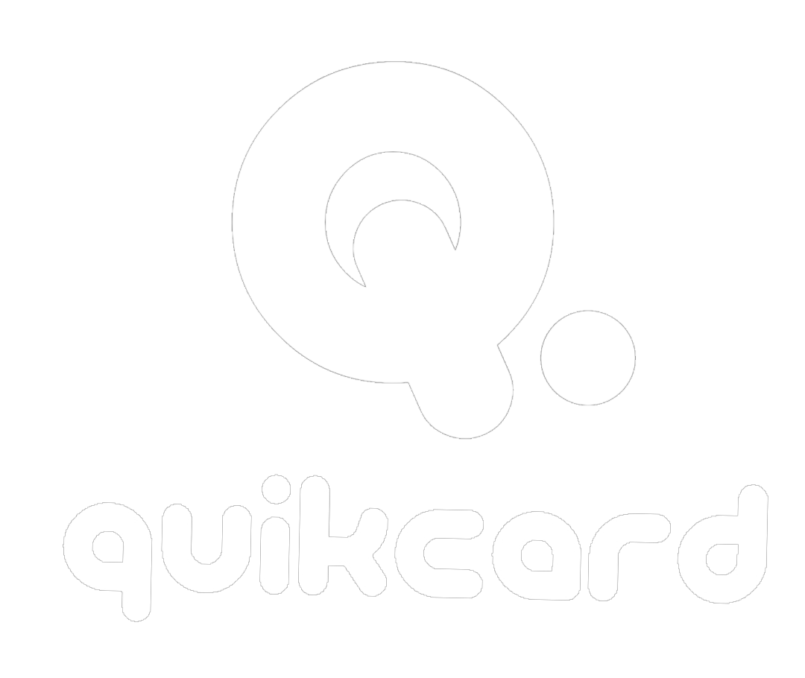

QuikCard is a QR-based digital card wallet application developed by Comluk Solutions. The app allows users to scan QR codes, organize digital cards, and revisit stored links.
This Privacy Policy explains how the app uses device permissions and handles information. QuikCard is designed to operate primarily on your device and does not collect, store, or sell personal data.
QuikCard does not:
QuikCard requests access to your device camera solely for the purpose of scanning QR codes. Camera data is processed locally on your device.
No camera footage is recorded or transmitted. No images or video streams are stored by the app. The camera is used only when the user activates the scanning feature.
When a QR code is scanned, the QR content is processed locally on your device. If saved, the QR data is stored locally using device storage.
QR data is not transmitted to Comluk Solutions unless verification features require checking a code signature (see Section 6). Saved cards remain stored on your device unless you delete them.
QuikCard stores the following information locally on your device:
This data is stored using device-local storage mechanisms and is not uploaded to external servers.
Future versions of QuikCard may include a verification feature that checks certain QR codes against a remote verification registry controlled by Comluk Solutions.
If enabled, the app may send a verification identifier (such as a QR signature parameter) to a remote endpoint for authenticity confirmation.
No personal contact data (phone numbers, email addresses, etc.) will be transmitted for verification. The verification process does not create user accounts or track usage behavior.
QuikCard may support dynamic themes or branded wallpapers. The app may download theme images or configuration files from a Comluk Solutions-controlled server.
These files are visual assets only (e.g., wallpapers, logos, styling elements). Downloaded assets may be stored locally within the app for performance and offline use.
Because QuikCard primarily stores information locally on your device, data security is dependent on your device’s security settings.
Comluk Solutions does not maintain a centralized database of user information. Users are responsible for securing their devices with appropriate protections.
QuikCard does not knowingly collect personal data from children. The app does not require account creation and does not request personal information.
QuikCard does not integrate third-party analytics, advertising networks, or tracking services. If future features require integration with third-party services, this Privacy Policy will be updated accordingly.
This Privacy Policy may be updated to reflect new features or legal requirements. Updates will be reflected by revising the Effective Date at the top of this document.
Comluk Solutions
Email: comluksolutions@gmail.com
Website: www.comluksolutions.com